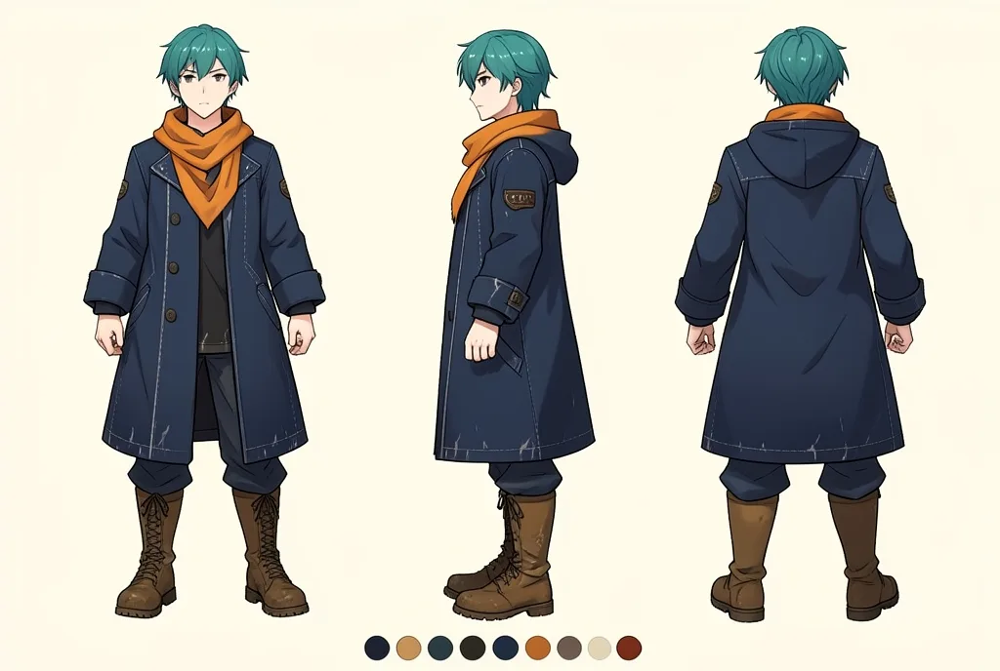
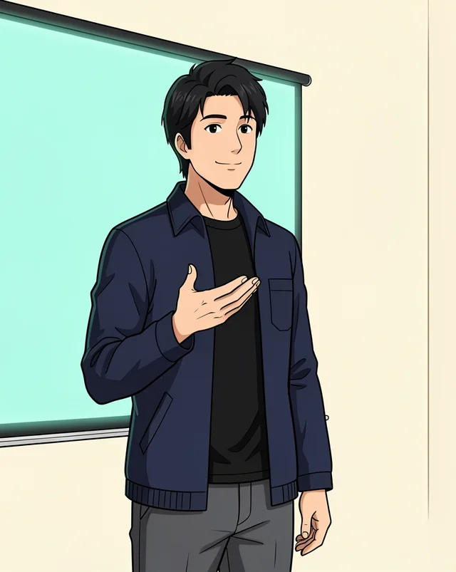

絵が描けない会社員のための
1日30分から始める AI画像副業！
オンラインAI画像スクール
100個以上のプロンプトと
絵心ゼロでも「作りたい画像」を形にするスキルを
まずは無料で「30日ロードマップ＆進捗管理シート」を受け取れます
無料でロードマップを受け取る無料プレゼント
秋から始めるAI画像副業の仕込み術
作品制作 → SNS発信 → 販売準備まで！
初心者向け30日ロードマップ＆進捗管理シート
このロードマップで分かること副業収入までの具体的な道のり
無料でロードマップを受け取るこんな悩みは
ありませんか？
- 「絵が描けなくてもAIならできる」と聞いたのに、思い通りの画像が作れず、難しいと感じている。
- 時間をかけて作ったキャラクターが、2枚目・3枚目で別人になってしまい、悩んでいる。
- 仕事や家事の後の限られた時間では、独学がなかなか進まないと感じている。
- AI画像で副業を始めたいのに、何を作ってどうお金に変えるのかわからず、立ち止まっている。
- 以前スクール選びで失敗して、「また失敗したらどうしよう」と思っている。
- SNSのAI作品を見るたびに、自分には才能がないのではないかと感じている。
このまま
「なんとなく独学」を
続けて、本当に
大丈夫ですか？
最初は、
「すごい！こんな画像が作れるんだ！」
と感動したのに、少し複雑な画像を作ろうとすると、
「なんか違う……」
「キャラクターが
「同じ雰囲気で作れない……」
そんな壁にぶつかる人も少なくありません。
しかも、わからないことが出てくるたびにYouTubeやSNSを検索していると、気がつけば──
- 30分
- 1時間
- 2時間……
せっかくの貴重な自由時間を「調べる時間」に使ってしまい、肝心の「作る時間」がなくなってしまいます。
そして、SNSで次々とAI作品を発表している人を見るたびに、
「自分もやりたいと思っていたのに……」
と、取り残されたような気持ちになってしまいます。
AIは「絵が描けない人にも
だからこそ、
才能の問題ではなく、
正しい順番で学び、
実際に手を動かせるかどうかが重要なのです。
Solution
大切なのは、才能より「作る → 発信する → 仕事につなげる」順番です。
AI画像を副業につなげるために必要なのは、難しいデザイン理論を何年も勉強することでも、絵を描く才能でもありません。
大切なのは、この道筋を最初に理解することです。
- 1何を作るのか
- 2どうやって作るのか
- 3誰に届けるのか
- 4どうやって仕事につなげるのか
そこで、AI画像初心者の方が最初の一歩を踏み出せるように、
秋から始めるAI画像副業の仕込み術
作品制作 → SNS発信 → 販売準備まで！
初心者向け30日ロードマップ＆進捗管理シート
をご用意しました。
このロードマップでは、AI画像副業を始めるために必要なことを、いきなり全部覚えるのではなく、30日間の流れに沿って整理しています。
「今日は何をすればいい？」
がわかるから、仕事がある会社員の方でも、1日30分から少しずつ進めることができます。

絵が描けなくても大丈夫。
AIを使えば、頭の中にある「こんな画像を作りたい」というアイデアを、少しずつ形にしていくことができます。
まずは完璧な作品を作ることではなく、
「自分にもAI画像が作れた」
という最初の成功体験を作ることから始めてみてください。
講師紹介

AIクリエイター
映像企画30年 ×
AIクリエイティブ3年
エンタメ業界で30年にわたり映像企画に携わり、「どうすれば人の目を引き、興味を持ってもらえるか」を追求してきました。
現在はAI画像制作を中心に、AI動画・AIボイス・BGMまで、AIを活用した幅広いコンテンツを制作しています。
これまでに、AI初心者5名を1年以内に、AIクリエイターとして制作できるレベルまで育成。画像を作るだけでなく、AI画像の生成環境づくりから一貫してサポートできるのが強みです。
- 見る人を惹きつける企画
- 伝えたい内容を形にする構成
- AIを活用した画像・動画制作
- AI画像生成環境の構築・導入サポート
- 初心者でも制作できる環境づくり

AIでの画像生成だけではなく、
サポートを受けた方の声※画像はイメージです
画像生成環境のサポートまで
してもらえたことで、本当の初心者でも
AI画像を作れるようになりました。
無料特典の中身
無料でもらえるのは
「AI画像副業の全体像」
だけではありません
今回お渡しする30日ロードマップ＆進捗管理シートを使えば、AI画像副業を始めるために、次の4つを順番に進められます。
-
STEP1
AI画像を作る
まずはAI画像制作の基本を理解し、「自分が作りたい画像」を形にするところからスタート。絵が描けなくても、AIを活用して作品を作るための考え方を整理できます。
-
STEP2
作品を発信する
作った作品を「作って終わり」にせず、SNSなどを活用して人に見てもらうための準備を進めます。
-
STEP3
販売につなげる準備をする
「作品を作ったら、次はどうする？」という疑問に対して、販売や仕事につなげていくための準備を整理します。
-
STEP4
30日間の行動を管理する
「今日は何をすればいい？」「今、自分はどこまで進んでいる？」がわかるように、30日間の進捗を管理できるシートを用意しています。
こんな方におすすめです
- 絵が描けないけれどAI画像を作ってみたい方
- AI画像を副業につなげてみたい方
- 独学で何から始めればいいかわからない方
- SNSでAI作品を発信してみたい方
- 仕事をしながら少しずつAIを学びたい方
- AI画像で「自分にもできた」という成功体験を作りたい方
特に、「やってみたい気持ちはある。でも、何から始めればいいかわからない」という方には、最初の道しるべとして活用していただけます。
まずは30日。
いきなり大きな副業収入を目指すのではなく、毎日少しずつAI画像制作を進めながら、あなた自身の可能性を確かめてみてください。
Q&A
よくあるご質問
絵がまったく描けなくても大丈夫ですか？
大丈夫です。AI画像は、ペンで描くのではなく、作りたいイメージを言葉（プロンプト）で伝えて形にしていきます。30日ロードマップでは、最初に「何を作るのか」を決めるところから順番に進めます。
1日にどのくらいの時間が必要ですか？
1日30分からを目安にしています。「今日は何をすればいい？」がわかるように30日分の流れを整理しているので、仕事や家事が終わった後の限られた時間でも、少しずつ進められます。
パソコンがなくても始められますか？
はい。スマホから始められる進め方をまとめています。まずはお手持ちのスマホで、AI画像を1枚作ってみるところからスタートしてください。
同じキャラクターを何枚も作れるようになりますか？
スクールでは、100個以上のプロンプトとキャラクター設計シートを使い、同じキャラクターを描き分ける方法を学べます。まずは無料のロードマップで、作品づくりの進め方をつかんでください。
AI画像の著作権や商用利用が不安です。
商用利用できるかどうかは、使うAIサービスごとにルールが違います。販売や仕事に使う前に、利用規約を確認しておくことが大切です。ロードマップの「販売準備」のステップで、確認しておきたいポイントを整理しています。
本当に無料で受け取れますか？
はい。30日ロードマップ＆進捗管理シートは、無料でお受け取りいただけます。
以前スクール選びで失敗したので不安です。
いきなりスクールに申し込む必要はありません。まずは無料のロードマップで、AI画像副業の全体像と進め方を確かめてみてください。「自分にもできそう」と感じてから、次の一歩を考えていただければ十分です。
「いつかやってみたい」を、
今日から始めませんか？
AI画像副業を始めるのに、特別な才能は必要ありません。
- 絵が描けなくても。
- デザイン経験がなくても。
- AI初心者でも。
大切なのは、
「やってみたい」と思った今、
最初の一歩を踏み出すこと。です。
1日30分からでも構いません。
まずは無料の30日ロードマップを手に入れて、
- 「自分は何を作ればいいのか？」
- 「何から始めればいいのか？」
- 「どうやって副業に
つなげていけばいいのか？」
を明確にしてください。
そして30日後、
「絵が描けなかった自分でも、
ここまで作れるようになった」
という実感を手に入れてください。
あなたが作った作品を見て、家族から「すごいね」と言ってもらえる日も、決して遠い未来ではありません。
まずは無料で受け取ってください
無料プレゼント
秋から始めるAI画像副業の仕込み術
作品制作 → SNS発信 → 販売準備まで！
初心者向け30日ロードマップ＆進捗管理シート
- 副業収入までの具体的な道のりがわかる
- 「今日は何をすればいい？」が毎日わかる
- 1日30分から、スマホで進められる
受け取りページは準備中です。公開まで、もうしばらくお待ちください。
AIで何かを始めたいと思った、
その気持ちを無駄にしないために。